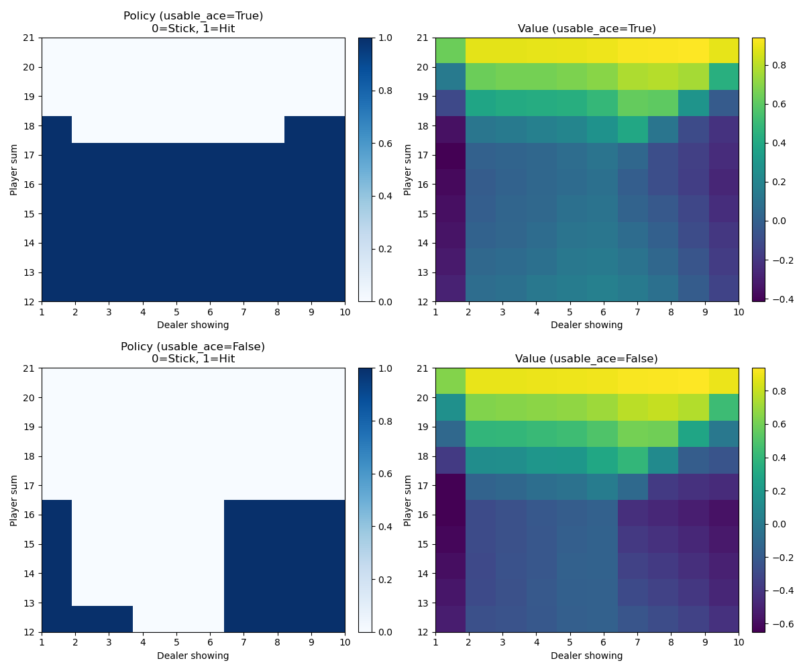

Reinforcement Learning · Monte Carlo Methods
Using Monte Carlo Exploring Starts (MC ES) to solve Blackjack and converge on the optimal policy (strategy). The game was simulated 2 million times, allowing the algorithm to explore enough state-action pairs to reliably estimate the optimal value function.
The optimal strategy derived from simulation, showing when to hit or stand based on player hand and dealer's upcard:

Monte Carlo ES works by generating complete episodes starting from randomly selected state-action pairs (exploring starts), then updating action-value estimates using the returns from each episode. After sufficient episodes, the greedy policy with respect to the estimated Q-values converges to the optimal policy.